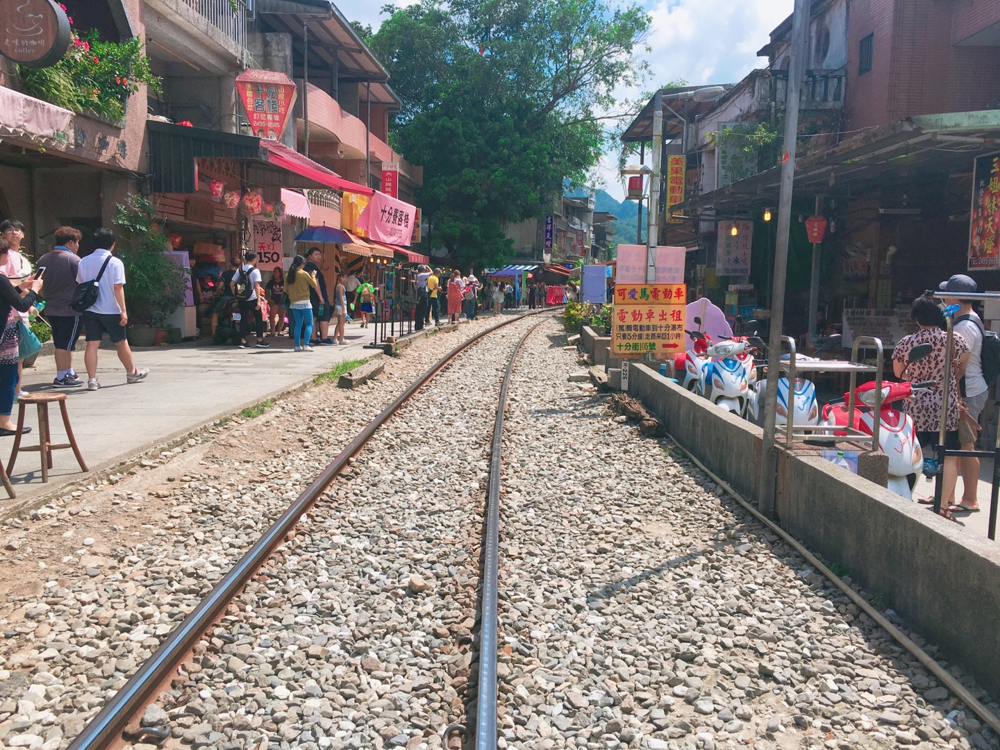
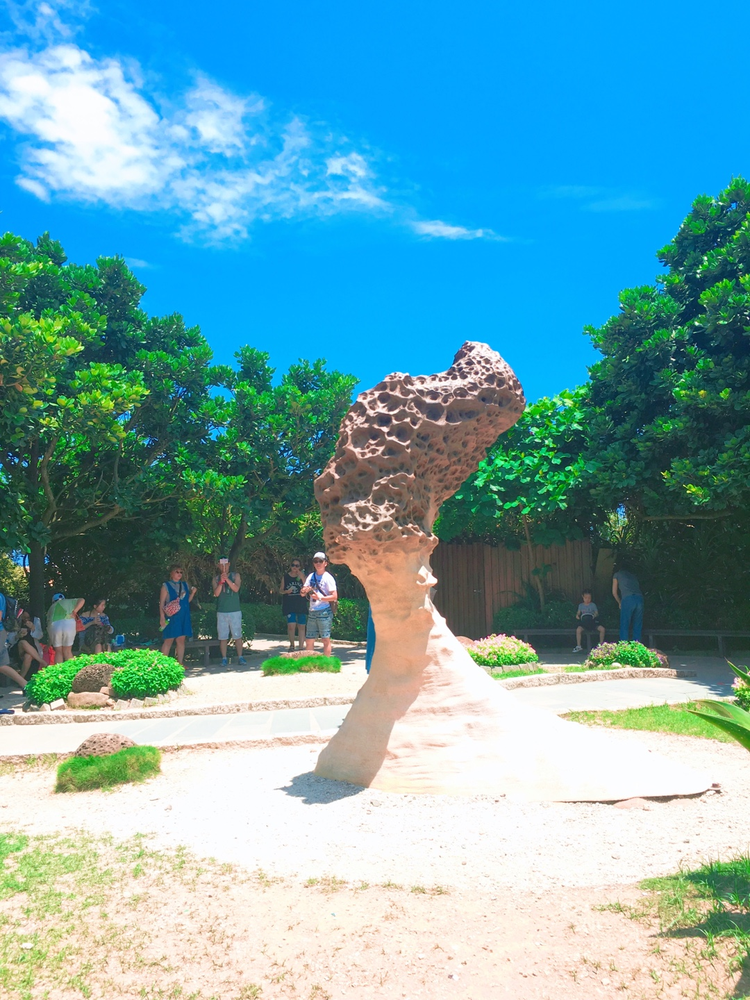
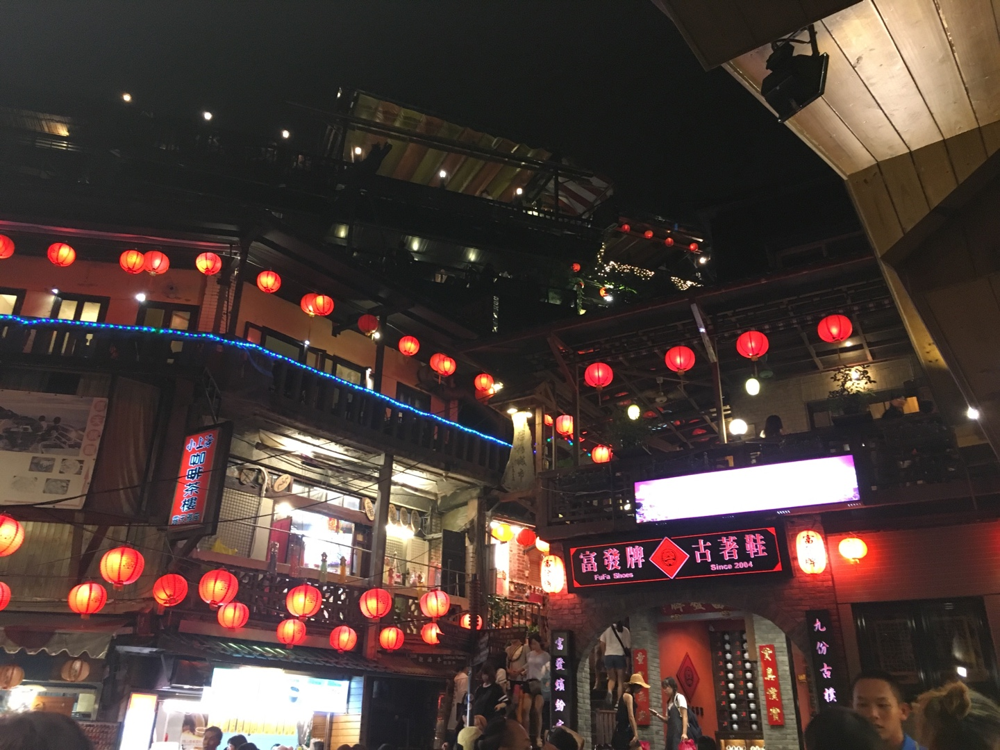

1. 위치
타이완해협을 사이에 두고 중국 푸젠성과 마주하고 있는 나라로 중국 본토에서 약 150㎞ 떨어져 있다. 1885년 하나의 성(省)으로 독립하였고, 청일전쟁 뒤 일본 최초의 해외 식민지가 되었으며, 1949년 중국공산당과의 내전에 패배한 국민당의 장제스 정권이 이전해 와 성립된 국가이다.
2. 명소
(1) 스펀
철도를 중심으로 양쪽에 건물들이 늘어져 있어 철도가 마을 중심을 가로지르는 특이한 지형을 가지고 있다. 이 철도는 1시간에 한 대 지나가는 핑시선 이외에는 기차가 다니지 않아 관광지로 사용된다. 그 시절, 우리가 좋아했던 소녀에서 커징텅과 션자이가 천등을 날린 장소이다. 또한 꽃보다 할배/대만 편 마지막 화에서 신구와 이서진이 천등을 날린 장소이다.
(2) 예류
다양한 자연 지형을 한 곳에서 맛 볼 수 있다는 것인데, 특히 대표적으로 윗쪽의 사암형질이 침식에 견뎌내고 아랫쪽의 암층이 바닷바람 등의 요인으로 침식하여 만들어지는 버섯바위, 해수의 염분으로 인해 끊임없이 풍해되어 만들어지는 벌집바위가 곳곳에서 관찰된다.
(3) 지우펀
1920~30년대에는 금광 채굴로 번영하던 도시였으나 광산이 폐광된 이후로 한적한 시골 마을로 전락했다. 하지만 1989년 영화 비정성시의 촬영지로 유명세를 얻어 현재는 관광 산업으로 활기를 되찾았다. 대한민국에서는 드라마 온에어와 꽃보다 할배의 촬영지로 유명하다. 또한 일본 애니메이션 센과 치히로의 행방불명의 배경지로 홍보되면서 유명세를 탔지만 정작 미야자키 하야오는 공식적으로 부인했다. 그리고 일본에 더 비슷하게 생긴 온천장들이 다수 존재하므로 신빙성이 부족하다. 다만 모티브 중의 하나로 활용되었을 여지는 있다.